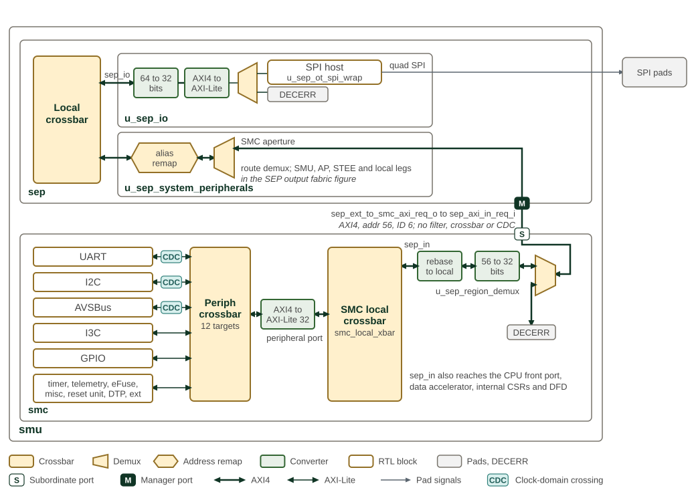

Peripheral Subsystem
SEP reaches the serial-I/O peripherals in SMC over a dedicated AXI4 port,
sep_ext_to_smc_axi_req_o, split off by the route demux in
sep_system_peripherals and wired to SMC’s sep_axi_in. It reaches every SMC
local target without passing the SEP outbound filter. SEP also has a local SPI
host for boot-flash access. The SPI chapter describes that controller; SMC
documents the shared peripherals.
SEP boot uses configuration straps, which it reads from the SMC strap registers. For their role in selecting boot options, see Configuration Straps and BL0 Boot Flow.
SEP peripheral extension port shows the connection from SEP to peripherals shared with SMC.

The figure reads from the SEP local crossbar outwards. The SPI host sits
behind the sep_io target, which downsizes the 64-bit AXI4 request to 32
bits and converts it to AXI-Lite; the quad SPI signals leave for the SPI pads.
The local crossbar sends only the SPI host register extent to sep_io and
answers the rest of its aperture with DECERR on reads and writes. The error
responder in sep_io answers only the beats of a burst that run past the
extent.
Requests in the SMC aperture take the route demux of sep_system_peripherals (see
SEP output fabric) onto the SMC port, which the SMU wires directly
to the SMC’s sep_axi_in port with no crossbar and no clock-domain crossing.
The SMC flow is drawn right to left. The SMC input fabric passes addresses in
the SMC local or global window, truncated to 32 bits, and answers others with
DECERR. The SMC local fabric rebases them onto the SMC local base, and the
sep_in initiator of the SMC local crossbar reaches every target, including
the peripheral port, which is converted to 32-bit AXI-Lite for the SMC
peripheral crossbar. The UART, I2C and AVSBus controllers sit behind
clock-domain crossings into the peripheral clock.